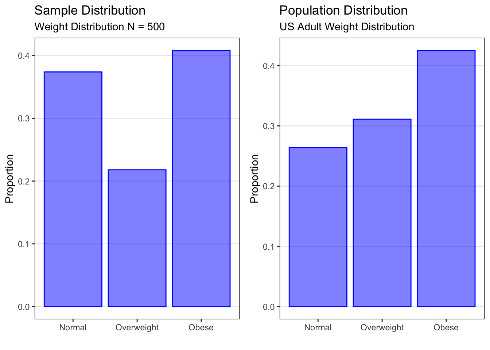

Chapter 3 Sampling
As we described in the Cycle of Research, statistical inference is the process of drawing conclusions about a population on the basis of observations from a sample. Put another way, statistical inference is the process of generalizing study results from the study sample to the population of interest. Drawing correct inferences about the population depends on knowing how representative the sample is of that population. A sample is representative of the population if every person or unit in the population of interest has the same chance of being included in the sample. If the chance of being included in the sample differs from person to person, then we are vulnerable to selection bias, which will affect our ability to make accurate inferences about the population.
3.1 What is selection bias?
In general, “bias” refers to systematic error or inaccuracy in a result. The result deviates systematically from the truth. There are a number of kinds of bias that can be introduced into a research study, usually unintentionally, at any stage from design through to publication.
Selection bias is formally defined as “A systematic tendency to favor the inclusion in a sample of selected subjects with particular characteristics while excluding those with other characteristics” (Pocket Dictionary of Statistics). Selection bias means that some members of a population were more likely to be included in the study than others. For example, if potential study participants were contacted by randomly selecting names from SnapChat, then people who do not have a SnapChat account will be systematically excluded. The resulting study sample is not representative of the population the researchers intended to study. Since the study sample is not representative of the population, the study results cannot be generalized to the population.
3.2 Random Sampling
Random sampling methods are used in research studies to minimize this type of bias. Random sampling is a sampling technique for which the probability of each individual being selected into the sample is known. Another term used for this kind of sampling is probability sampling. Three random sampling methods are commonly used in medical or public health studies: simple random sampling, stratified random sampling, and cluster random sampling.
3.2.1 Simple Random Sampling
A simple random sample (or SRS) is a random sample where each member has the same chance of being selected, and members are selected independently from each other. In other words, knowing whether other individuals were selected into the sample tells you nothing about whether or not you will be selected into the sample. When simple random sampling is carried out, each potential sample of n individuals from the population is equally likely to be selected.
For example, in a simple random sample from the population of Minnesota residents, all residents are equally likely to be chosen, regardless of who they are or where they live. In addition, the probability of a given resident being chosen does not increase (or decrease) if their neighbor is chosen.
There are two important things to note about simple random samples:
First, taking a simple random sample from a given population doesn’t guarantee that your particular sample will “look like” your population, for the same reason that tossing a fair coin 10 times doesn’t always produce exactly 5 heads and 5 tails.
Second, for practical reasons, it is rarely possible to obtain a “true” simple random sample from a population. Instead, it is an ideal that studies try to achieve to the closest degree possible, in order to obtain a sample that is representative of the entire population.
Obtaining a simple random sample (SRS) requires first that all possible members of the population of interest are identified and listed. Once that is accomplished, a random sample of size n can be chosen using a number of possible methods.
An identification (ID) for each member of the population can written on slips of paper and placed in a hat, and someone can randomly select n slips of paper. This ultra-low-tech method works for small populations, such as children in a school classroom.
A table of random numbers can be used to select n items from the population list. This method is useful when you do not have access to a computer.
A computer program (for example, random.org) can be used to randomly select n items from the population list. For example, we could have a numbered list of all 51,000 students at the University of Minnesota (our population of interest). We could use a random number generator to give us 1,000 random numbers, between 1 and 51,000. Then we would select the 1,000 students whose numbers on the list correspond to the randomly chosen numbers. These 1,000 students would form our sample.
In the health sciences, situations where you can obtain a sample via simple random sampling are quite RARE due to feasibility issues, or sometimes even to desirability issues. Study designs often dictate the nature of sampling.
3.2.2 Stratified Random Sampling
In stratified random sampling, the population is divided into subgroups, or “strata”, with similar characteristics, and a simple random sample is selected from each stratum. Common stratification variables include gender, age group, or clinic.
Typically, the motivation for doing stratified sampling is to ensure that you have “enough” of a particular subgroup to carry out your analyses of interest. For example, if you were interested in looking at differences in breast cancer tumor characteristics between men and women, you’d do stratified sampling to ensure that you had enough men in the sample to make the sex comparison with reasonable precision.
Stratified random sampling requires that information about the stratification variable or variables is available for all potential participants.
3.2.3 Cluster Random Samping
In cluster sampling, “interventions” are delivered to groups rather than individuals. The population is divided into clusters and a sample of clusters (random or not) are selected. Cluster sampling is often done in a hierarchical or multistage fashion, with the selected clusters further divided into sub-clusters from which another sample (random or not) is selected. Cluster sampling is often used in epidemiologic studies.
For example, if a study is interested in the effect of spraying insecticide to prevent malaria, the sampling is done on houses rather than individuals. Everyone in the house (the cluster) experiences the intervention at the same time, but the outcome of interest is measured at the individual level. Because of this, cluster sampling is an example of non-independent sampling.
Clusters are often defined geographically. For example, you might divide a city into neighborhoods, and the neighborhoods into blocks, and the blocks into houses. You would randomly choose a specified number of neighborhoods, and then randomly choose a specified number of blocks within those neighborhoods, and then randomly choose a specified number of houses on each block. The random selections could be simple random samples, or they could be systematic random samples (for example: select every 6th house in the block).
Cluster sampling does not require that all members of a population be identified and listed.
3.2.4 Non-Random Sampling
In non-random sampling, or non-probability sampling, the probability that a given participant is selected is unknown and may be influenced by selection bias.
In convenience sampling, participants who are readily available are enrolled until the desired sample size is reached. That is, researchers just “conveniently” grab participants who are available. Volunteer sampling is a sampling method that relies on participants who choose to respond (for example, online surveys) and are a type of convenience sample.
Quota sampling is a non-random version of stratified random sampling. Quota sampling occurs when the sample that is obtained has the same proportions of individuals as the entire population with respect to pre-specified known characteristics or traits. That is, the population is divided into categories with a required quota for each category. Participants are enrolled into the study from each category until the quota for that category is reached.
In systematic random sampling, every kth item is chosen. For example, if you were sampling customers in a store, you might approach every 10th person who walked by, or every 20th person. Systematic random sampling should not be used if there are cyclical patterns in the data. For example, selecting hospital admissions data from every seventh day or every 12th month may not be representative of the overall population of admissions and could introduce bias.
The problem with non-random samples is that they may be biased. Not all members of the population of interest have the same probability of being included in the study, so the study sample is not representative of the population. The participants who are “readily available” may differ in some ways from the population as a whole. For example, if a study of sleep apnea were done by sampling people who had recently been to a clinic for any reason, then people who had not been sick recently, or people who had no access to medical care, or people who were in hospitals, prisons, or nursing homes, or military personnel on active duty, would not be included in the study.
However, in many studies, we actually use one of these approaches to obtain our sample but then view it (and do inference) as if it were an SRS. Often, this non-random sampling is “close enough” to random sampling that we are OK with it. For example, when recruiting for a clinical trial of a new HIV medication, we don’t make a numbered list of all individuals with HIV and then contact them randomly; instead, we approach people attending HIV clinics and ask them to participate. If we want to infer something about the population, we then have to make the argument that this approach approximates random sampling because, for example, the patients attending the clinic during the recruitment period (and who agree to participate) are representative of and have approximately the same characteristics (such as gender, age, socioeconomic status, etc.) as the overall population of HIV-infected individuals.
Note that if data were collected on every member of the population of interest, then statistical inference would not be necessary. You do not need to infer from a sample to a population if you already have complete data on the population. Descriptive statistics completely represent the population when you have population data; inferential statistics are unnecessary.
3.3 Discrete Distributions
3.3.1 Random Variables
A random variable is an abstract concept that represents the values that could arise from a random process, before they are observed. A random process could be something like tossing a coin or rolling a die, or it could be randomly sampling participants from a population of interest for a survey or a clinical study. We typically use capital letters to represent random variables.
For example, the variable smoker, which describes a participant’s smoking status in the Blood Pressure dataset, can be seen as a random variable symbolized by a capital letter \(Y\). The smoker random variable can take on only two possible values: 0 if the participant is a nonsmoker, and 1 if the participant is a smoker.
Lowercase letters are used to represent the actual observed values. Every person in the Blood Pressure dataset has a measured value for the random variable smoker. The first person in the dataset is a nonsmoker, so their value is 0. We use a lower case letter, \(y\) in this case, with a subscript of 1 to indicate that this is the first person in the dataset, followed by the value for that person of 0 since they are a nonsmoker (that is, \(y_1 = 0\)). Similarly, person 15 in the Blood Pressure dataset is a smoker, so their value is 1. We note this with a lower case y, then the subscript 15, and set that equal to 1 (that is, \(y_15 = 1\)).
3.3.1.1 Discrete Random Variables
A discrete random variable is a variable that can take on only a finite (or limited) number of possible values. There are two types of discrete random variables: discrete numerical variables, which have a finite set of whole number values, and categorical variables, which have a finite number of possible categories.
The smoker variable in the Blood Pressure dataset, a categorical variable, is a discrete random variable because it can take on only two possible values: smoker (1) or nonsmoker (0).
The outcome of a die roll, a discrete numerical variable, is a discrete random variable because we can roll only one of six possible numbers: 1, 2, 3, 4, 5, or 6.
3.3.2 Distributions
A distribution describes how often different values for a random variable arise from a random process. There are three types of distributions that are discussed in this book.
A sample distribution describes how often each possible value of a variable has occurred in a specific sample. When we graph the sample data for a variable using a barplot or a histogram, we are visualizing the sample distribution.
A population distribution describes how often each possible value of a variable occurs in the population of interest.
A sampling distribution describes how often each possible value of a sample statistic (such as the sample mean) could occur in all possible samples. Sampling distributions will be discused later.
3.3.2.1 Categorical Distributions
Let’s start with distributions for categorical variables.
Categorical variables can be summarized graphically using barplots, or in tables using the number and/or proportion in each category. Either kind of summary is a sample distribution, but for clarity we will focus on graphical summaries.

The barplot on the left above is a sample distribution for the Overwt variable in the Blood Pressure dataset. Recall that the Blood Pressure dataset contains data on a sample of N = 500 adults from the U.S. population. The plot is a sample distribution because it describes how often different values of the Overwt variable occur in this sample. For each possible category of the variable (normal, overweight, or obese), the plot shows the proportion of participants in the sample who fall into that category. This plot could also have been produced as the number of participants in the sample who fell into each category.
The barplot on the right above is a population distribution for weight in the U.S. adult population as determined by the Centers for Disease Control and Prevention (CDC). It is plotted using the same weight categories as in the Blood Pressure dataset. This plot is a population distribution because it describes how often different values of the weight variable occur in the population. For each possible category of the variable (normal, overweight, or obese), the plot shows the proportion of the U.S. adult population that falls into that category. Population distributions always use proportions or probabilities on the y-axis.
Note that the overall structure is the same. We have the categories on the x-axis and a measure of quantity on the y-axis.
We can see that the proportions in each weight category in the sample data (on the left) are similar to but not exactly the same as the true proportions in the population (on the right). We will learn later how to use data from a sample (as shown on the left) to make inferences about the population (as shown on the right). For now, let’s focus on what information the population distribution gives us.
A population distribution gives us several different kinds of information.
First, it gives information about overall trends. For example, looking at the population distribution for weight in U.S. adults (above), we see that the normal weight category has the lowest proportion, and the obese weight category has the highest proportion.
Second, it gives information about the proportion of the population in a particular category. In our example, we see that the proportion of U.S. adults who are classified as obese is .425, the proportion classified as overweight is 0.311, and the proportion classified as normal weight is 0.264.
Finally, it gives information about the proportion of the population in several categories. In our example, if we would like to know the proportion of the U.S. adult population that are not obese, we could add up the proportion that are normal weight and the proportion that are overweight (0.264 + 0.311 = 0.575) and find that 57.5% of U.S. adults are not obese.
Proportions obtained from population distributions can also be interpreted as probabilities. Since the proportion of U.S. adults who are obese is 0.425, then if we select a person at random from the U.S. adult population, there is a 42.5% chance (or a probability) that the selected person will be obese.
3.3.2.1.1 Bernoulli Distribution
For example, suppose we were interested in a random binary variable \(X\), which describes whether a random U.S. adult is obese or not. \(X\) takes on the value 1 if the person is obese, and 0 if they are not. The population distribution of the random variable \(X\) could be described using a Bernoulli distribution with p = 0.425. A plot of this distribution (above) shows us that the probability of the event, being obese, is 0.425, and the probability of not having the event, not being obese, is 0.575.
Theoretical distributions are described using mathematical notation by giving the name of the distribution and the parameters that describe it. The notation is to list the random variable and then a tilde (\(\sim\)) symbol, which indicates that the variable has a given distribution. (The tilde can be read as “is distributed as”.) The tilde is followed by the name of the theoretical distribution followed by parentheses that include the parameter or parameters that define the distribution.
The general notation for a Bernoulli distribution, then, would be \(X \sim \text{ Bernoulli(p)}\), read as “X is distributed Bernoulli with probability p”, where p is the probability of the event of interest.
In our example, we would write \(X \sim \text{ Bernoulli(0.425)}\). The binary obesity variable \(X\) is distributed Bernoulli with probability 0.425.
3.3.2.1.2 Discrete Numerical Variables
Now, let’s turn to distributions for discrete numerical variables.
Discrete numerical variables can be summarized graphically using histograms, or in tables using the number and/or proportion in each category. Either kind of summary is a sample distribution, but for clarity we will focus on graphical summaries.
The histogram on the left is a sample distribution for the results of rolling a standard six-sided die 330 times. The plot is a sample distribution because it describes how often different values (1 through 6) of the die roll occurred in this sample. In this particular sample of 330 rolls, the die came up as “1” 57 times, as “2” 488 times, and so on.
The histogram on the right is a population distribution for rolling a fair standard six-sided die. This plot is a population distribution because it describes how often different values of a die roll occur in the population. For each possible value of the die roll (1 through 6), the plot shows the probability of obtaining that value. If the die is fair, the probability of any given die roll value is the same: 1 in 6, which gives 0.167 or 16.7%.
Note that the overall structure is the same: We have the possible values on the x-axis and a measure of quantity on the y-axis.
We can see that the proportions for each die roll value in the sample data (on the left) are similar to but not exactly the same as the true probabilities in the population (on the right). We will learn later how to use data from a sample (as shown on the left) to make inferences about the population (as shown on the right). For now, let’s focus on what information the population distribution gives us.
A population distribution gives us several different kinds of information.
First, it gives information about overall trends. For example, looking at the population distribution for all possible rolls for a fair die (above), each die roll has an equal probability of happening. This is because we are assuming that the die is a fair die, and each number has an equal chance of happening.
Second, it gives information about the probability in a particular category. In our example, there are six different values on the die (1 through 6), and each has an equal chance of being rolled. Therefore, the chance of rolling any one number is 1 out of 6, or 0.167. For example, the probability of rolling a 1 would be 1/6 or 0.167.
Finally, it gives information about the probability in several categories. In our example, if we would like to know the probability that a die roll would be less than 4, we would add up the probabilities for all possible die rolls less than 4 (that is, rolls of 1, 2, or 3): 0.167 + 0.167 + 0.167 = 0.5. We would find that the probability of rolling a number less than 4 with a fair six-sided die is 1/2.
3.3.2.1.3 Binomial Distribution
One common discrete numerical distribution model is the Binomial distribution, which is used to model the number of times a specific event occurs in multiple attempts. For example, how many times would we get heads if we tossed a coin four times? The Bernoulli distribution, which we discussed earlier, tells us that the probability of obtaining heads on a single coin toss (assuming the coin is fair) is 0.50 or 50%. But what if we tossed the coin more than once? How many times should we expect heads? The Binomial distribution gives probabilities for each possible number of heads we could get if we tossed the coin multiple times. The Binomial distribution is characterized by two parameters: p, which is the probability of the event of interest on any given attempt, and n, which is the total number of attempts.
The random variable X gives the number of events (heads, in our example) that occur when a binary outcome (such as obtaining heads on a coin toss) is measured on a number, n, of different independent attempts (such as coin tosses). The possible values of X range from 0 to n: in other words, in n tries, we could obtain anywhere between 0 and n events. The probability of the event (heads, in this case), p, is assumed constant for all attempts. Under these assumptions, the number of events that occur, X, is distributed as Binomial with parameters n and p, where n is the number of attempts and p is the probability of the event. In symbols, X ~ Binomial(n,p).
In our example, what would happen if we tossed a fair coin four times? How many heads should we expect? Here, the number of attempts, n, is 4, and the probability of the event (heads), p, is 0.5. We could conceivably obtain anywhere between 0 heads and 4 heads. The probabilities for each of the possible number of heads that could be obtained, 0 through 4, are given in the theoretical distribution plot above. The most likely result, with a probability of 0.375 or 37.5%, is that we will obtain two heads (and two tails) in our four tosses. There is a somewhat lower probability (25%) of obtaining one head, or three heads. There is a very low probability (6.25%) of obtaining no heads, or all four heads.
3.3.2.1.3.1 Example
Now let’s look at an example related to public health. Suppose that the (known) prevalence of obesity in the U.S. adult population is p = 0.379 or 37.9%. If we randomly sample four adults from the U.S. population, what is the probability that exactly two of the adults will be obese? What is the probability that two or fewer (i.e. half or less) of the adults will be obese? How likely is it that all four of the adults will be obese?
These probabilities can be obtained by using a Binomial distribution for the random variable X, which is the number of the selected U.S. adults who are obese. The Binomial distribution with the number of independent attempts (people) set at n=4 and the probability of the event (obesity) set at p = 0.379 is shown in the plot above. The probability of exactly two of the four people being obese (X = 2) is 0.332 or 33.2%, while the probability of two or fewer being obese is 0.844 or 84.4%. The probability of all four being obese is quite low, at 0.021 or 2%.
So… how do we obtain these Binomial probabilities? There are two ways. The first is to use the Binomial formula, and the second is to use statistical software.
3.3.2.1.3.2 Binomial Probabilities by Formula
\[ Pr(X = k) = \frac{n!}{(n - k)!k!}p^k(1 - p)^{n - k} \]
\[ \text{where } n! = n * (n - 1) * ... * 2 * 1 \]
If the random variable X has a Binomial distribution, we can calculate the probability of any number of events, k, given n attempts with probability p, using the Binomial formula given above. For our coin toss example, we would use n = 4, p = 0.5, and then calculate the probabilities one at a time for k = 0 heads, k = 1 head, k = 2 heads, k = 3 heads, and k = 4 heads.
This calculation can get tedious and error prone as the number of attempts n increases. A better way is to use statistical software.
3.3.2.1.3.3 Binomial Probabilities by Software
Statistical software such as SAS or R allows us to easily calculate Binomial probabilities. The exact syntax will depend on the software used, and will be discussed in the activities, but the information that must be provided to the software is the same for any software. We will need to tell the software the name of the distribution (here, the binomial distribution), the number of attempts or observations (n), the probability of the event of interest (p), and the number of events or “successes” (k) we are interested in. For our coin toss example, we would use the Binomial distribution with n = 4, p = 0.5, and k=the number of heads (“successes”) we wanted the probability for.
Let’s work through a few cases using our public health example. Recall that we assumed that the (known) prevalence of obesity in the U.S. adult population is p=0.379 or 37.9%, and that we have obtained a random sample of four adults from this population.
What is the probability that exactly two of the four adults are obese?
In this case, the number of attempts or observations is the number of adults in our sample, which is four, so n = 4.
The probability of the event of interest (being obese) is p = 0.379.
The number of events we are interested in is two, so k = 2. This is indicated by the yellow bar in the plot above.
We can either insert these values n, p and k into the Binomial formula given previously and calculate the probability, or we can insert them into our software of choice (R or SAS) and it will give us the probability. In either case, the probability that exactly two of the four adults in our sample are obese is 0.332 or 33.2%.
What if, instead, we wanted to know the probability that two or fewer of the four adults are obese?
The number of attempts or observations is still the number of adults in our sample, which is four, so n = 4.
The probability of the event of interest (being obese) is still p = 0.379.
Now, however, the number of events we are interested in is two or fewer, so k could be two, or one, or zero. This is indicated by the yellow bars in the plot above.
Again, we could use the Binomial formula given previously, and calculate the probability for k = 0, and then the probability for k = 1, and then the probability for k = 2, and then add the three numbers together.
Alternatively, we could tell our statistical software that we wanted the probability of k or fewer events (using a slightly different command than the one for the probability of exactly k events).
In either case, the probability that two or fewer of the four adults in our sample would be obese is found to be 0.844 or 84.4%.
Suppose instead we wanted to know the probability that more than two of the four adults are obese (i.e. that k = 3 or k = 4)? This is indicated by the red bars in the plot above. In this case, we would simply subtract the probability of two or fewer being obese (which is 0.844) from the total probability (which is 1.0), to give 0.156 or 15.6%.
Finally, what if we wanted to know the probability that between 1 and 4 of the four adults are obese? In other words, what is the probability that we will have more than 1 but less than 4 obese adults?
The number of attempts or observations is still the number of adults in our sample, which is four, so n = 4.
The probability of the event of interest (being obese) is still p = 0.379.
What is k? Between one and four events means that the number of events (being obese), k, could be two or three. This is indicated by the yellow bars in the plot above.
We could use the Binomial formula given previously, and calculate the probability for k=2, and then the probability for k=3, and then add the two numbers together.
With software, it gets a bit more complicated here, since most statistical software is set up to calculate the probability of being less or equal to a specified value of k. So in this case, we need to ask the software for the probability of less than or equal to 3 events (i.e. the probability of 3 or 2 or 1 or 0 events), and then ask it for the probability of less than or equal to 1 event (i.e. the probability of 1 or 0 events) and then subtract the two numbers. In this case, the probability of 3 or fewer events (3 or fewer of the four people being obese) is 0.979 or 97.9%. The probability of 1 or fewer events (1 or fewer of the four people being obese) is 0.512 or 51.2%. Therefore, the probability that between 1 and 4 of the four adults being obese is 0.979 – 0.512 which is 0.467 or 46.7%.
In either case, we will get the same result: the probability that between 1 and 4 of the four adults in our sample would be obese is 0.467 or 46.7%.
We must be very careful with words here. The probability that between 1 and 4 of the adults are obese depends on whether you include the 1 and/or the 4. We could have four possible cases, depending on whether we include 1, include 4, include both, or include neither. The resulting probabilities for the four cases will be different.
For example, the plot above shows the case where we include both 1 and 4 as well as the numbers between 1 and 4, as indicated by the yellow bars.
As before, we can calculate this probability in two ways.
We could use the Binomial formula given previously, and calculate the probabilities for k=1, and k=2, and k=3 and k=4, and then add the four numbers together.
With software, we need to ask the software for the probability of less than or equal to 4 events (i.e. the probability of 4 or 3 or 2 or 1 or 0 events), and then ask it for the probability of less than or equal to 0 events (i.e. the probability of 0 events) and then subtract the two numbers. In this case, the probability of 4 or fewer events (4 or fewer of the four people being obese) is 1.000 or 100%. The probability of fewer than 1 events (0 of the four people being obese) is 0.149. Therefore, the probability that at least 1 and at most 4 of the four adults are obese is 1 – 0.149 which is 0.851 or 85.1%.
Compare this result to our previous slide, where the probability that between 1 and 4 of the four adults are obese was 0.467, which is slightly more than half the probability that between 1 and 4 adults inclusive are obese.
It’s critical when finding probabilities for discrete distributions to pay attention to the words used to describe the values of interest, and determine which values are part of the range of interest.
3.3.2.1.4 Other Discrete Distribution
There are many other theoretical distributions relevant to specific kinds of discrete data, including the Hypergeometric distribution, the Poisson distribution, and the Negative Binomial distribution. For example, the Poisson distribution is used to model the distribution of what is called “count data” (for example, the number of births each day at a hospital) and is characterized by a single parameter, lambda (\(\lambda\)), the average rate of the event being counted (for example, the average number of births per day at that hospital).
3.3.3 Continuous Distributions
The key difference between a discrete random variable and a continuous random variable is that a continuous random variable can, at least in theory, have infinite possible values. This is because any given range of numbers (say the range from 0 to 1) can be divided into an arbitrarily large number of pieces: we could divide it into tenths, or hundredths, or thousandths, and so on.
For example, if we measure systolic blood pressure, we could in principle measure it to the nearest one millimeter of mercury (mm Hg), or to the nearest tenth of a millimeter, or to the nearest hundredth of a millimeter, without limit.
## [1] 133 115 140 132 133 138Of course, in practice, there are no blood pressure cuffs that can measure a person’s blood pressure to a precision of dozens of decimal places. In addition, even if our measurement device can measure blood pressure to a precision of (say) two decimal places, for practical reasons we may choose to report the measured blood pressure only to the nearest whole number, as shown above for the first six observations for the SystolicBP variable in the Blood Pressure dataset. Nevertheless, we consider blood pressure to be a continuous random variable.
Let’s look at continuous distributions.
Continuous variables can be summarized graphically using histograms or boxplots, or in tables using the mean and standard deviation (or median and IQR). Either kind of summary is a sample distribution, but for clarity we will focus on graphical summaries.
The histogram on the left above is the sample distribution for the SystolicBP variable in the Blood Pressure dataset. Recall that this sample consists of 500 people drawn from the U.S. population. The plot is a sample distribution because it describes how often different values of the SystolicBP variable occur in this sample. The y-axis denotes the number of individuals in our sample that take on certain values. Alternatively, you can construct histograms with “frequency” on the y-axis to denote the proportion of individuals.
The plot on the right above shows the population distribution for systolic blood pressure among all U.S. adults. This plot is a population distribution because it describes how often different values of systolic blood pressure occur in the population. The y-axis denotes the proportion of individuals in the population that take on certain values.
Unlike the population distribution for a discrete variable, the population distribution for a continuous variable is usually represented using a density curve instead of a histogram. This is because a continuous variable has an infinite number of possible values, so the probability at any one particular value (such as at 147.539872846384 mm Hg) is effectively zero. Therefore, probabilities for continuous variables can only be determined for ranges of values, not for single values.
The area under the density curve represents probability. The total area under the density curve is equal to 1.00 or 100% probability. The area under the curve within a specific range of values represents the probability that the variable has a value in that range. In our example, estimating by eye the area under the curve above 200 mm Hg, it appears that the probability that a randomly chosen U.S. adult has a systolic blood pressure above 200 mm Hg is quite small, roughly (very roughly) 0.05 or 5%.
Note that the overall structure of the sample distribution and the population distribution is the same: we have the possible values on the x-axis and a measure of quantity on the y-axis. The sample histogram for systolic blood pressure has the proportion in each bin on the y-axis. As previously mentioned, it could also be plotted with the count (or frequency) in each bin on the y-axis. The population density curve, on the other hand, always has probability on the y-axis.
We can see that the proportions for each range of systolic blood pressure values in the sample data (on the left) are similar to but not exactly the same as the true probabilities in the population (on the right). We will learn later in this course how to use data from a sample (as shown on the left) to make inferences about the population (as shown on the right). For now, let’s focus on what information the population distribution gives us.
A population distribution gives us several different kinds of information.
First, it gives information about overall shape and trends. In our example, the population distribution (above) has a single peak (that is, unimodal) and appears slightly skewed to the right.
Second, it gives information about the probability for a range of values. In our example, we see that the most common systolic blood pressure value among U.S. adults is where the peak of the curve lies, at approximately 130 mm Hg. We can also see that most U.S. adults have systolic blood pressures between about 90 and 210 mm Hg, and that only a few have values above 210 mm Hg.
Unlike for discrete variables, we cannot find the probability for a single value of a continuous variable, since, as discussed earlier, the probability for any single value of a continuous variable is essentially zero.
Here is an example: One measure of hypertension (high blood pressure) is systolic blood pressure over 140 mm Hg. We can use the population distribution to find the proportion of U.S. adults who have high blood pressure by finding the area under the density curve above 140 mm Hg. We find that the proportion of U.S. adults with blood pressure above 140 mm Hg is 0.388 or about 39%. Note that, since the probability of having a systolic blood pressure of exactly 140 is essentially zero, the proportion of U.S. adults with blood pressure at or above 140 mm Hg is also 0.388.
3.3.3.1 Normal Distribution
One very common theoretical distribution for continuous variables is the Normal distribution. It is also called the Gaussian distribution in honor of Carl Friedrich Gauss who noted this general shape in his work and characterized it, or the “bell curve” because the shape looks like a bell.
A Normal distribution is always unimodal (has only one peak) and symmetric. Due to its symmetry, its mean and median are identical. The majority of values are very close to the peak with fewer values further away from the peak. In principle, a Normal distribution has nonzero probability at any value all the way from negative infinity to positive infinity. In practice, Normal distributions are often used to model variables that can only take on positive values, such as systolic blood pressure or serum cholesterol.
Each Normal distribution is characterized by two parameters: the population mean, μ (pronounced mu), and the population standard deviation, σ (pronounced sigma). The mean defines the center or peak of the distribution and the standard deviation characterizes its width or spread. The random variable X represents the values that a continuous variable could take on (such as systolic blood pressure values). If this continuous variable is normally distributed, then we would say that the variable, X, is distributed as Normal with parameters μ and σ, where μ is the population mean and σ is the population standard deviation. In symbols, we write X \(\sim\) Norm(\(\mu, \sigma\)).
For all Normal distributions, slightly more than two thirds of their values (68.27% to be exact) lie within plus or minus one standard deviation from the mean, 95.45% of the values lie within plus or minus two standard deviations from the mean, and 99.73% of the values lie within plus or minus three standard deviations of the mean. This is sometimes referred to as the “68 – 95 – 99.7 rule” for Normal distributions.
The plot above shows two different Normal distributions. The gold curve is a Normal distribution with a mean of 50 and a standard deviation of 10. The red curve is a Normal distribution with a higher mean of 80 and a larger standard deviation of 20, so it is shifted to the right relative to the gold curve and is wider.
Now let’s look at an another example in more detail. Serum cholesterol is an indicator of heart health, and for U.S. women ages 20-34, the population distribution for serum cholesterol looks very similar to a normal distribution. We can model this population distribution by using a Normal distribution with mean cholesterol of 185 mg/dL and standard deviation of 39 mg/dL, as shown in the plot above.
We can then use this distribution to answer questions about probabilities. For example, what is the probability that a randomly selected U.S. woman in this age range would have a serum cholesterol level above 240 mg/dL? This probability turns out to be 0.079 or slightly under 8%.
Or… what is the probability that a randomly selected U.S. woman in this age range would have a serum cholesterol level below 240 mg/dL? This turns out to be 0.921 or about 92%.
Or… what is the probability that a randomly selected U.S. woman in this age range would have a serum cholesterol level between 200 and 240 mg/dL? This turns out to be 0.271 or about 27%.
So… how do we obtain these Normal probabilities? There are two ways. The first is to use the formula for the Normal distribution, and the second is to use statistical software.
\[ Pr(X \leq x) = Pr(X < x) = \int_{-\infty}^x \frac{1}{\sigma\sqrt{2\pi}}e^{-\frac{1}{2}\left(\frac{x - \mu}{\sigma}\right)^2} \]
If the random variable X has a Normal distribution with known mean and standard deviation, we can calculate the probability of X being less than any specific value, x, using the Normal distribution equation given above.
This calculation requires knowledge of calculus to do the integration and, like any hand calculation, is prone to error. A better way is to use statistical software.
We can use any statistical software package to calculate normal probabilities. It will require that we provide the name of the distribution (here, a Normal distribution), the parameters of the distribution (here, the population mean and the population standard deviation), and the specific value of interest.
Software will typically by default give the probability of being less than the specific value of interest. If we want to calculate the probability of being greater than the specific value of interest, or the probability of being between two specific values, then we have to do a bit more work.
What if we want to calculate the probability of being above a certain value?
Doctors use serum cholesterol levels to monitor heart health, and when the cholesterol level exceeds 240 mg/dL, doctors often start some sort of treatment or intervention, such as medication. What proportion of young women would need some sort of intervention? In other words, what is the probability that a randomly selected U.S. woman between the ages of 20 and 34 would have a serum cholesterol level above 240 mg/dL?
Software will give us the probability that a randomly selected woman from this population would have a cholesterol level below 240 mg/dL, which turns out to be 0.921. Since the probability of all events is 1, the probability of having a cholesterol level above 240 mg/dL is simply 1 – 0.921 or 0.079.
Alternatively, we could be interested in the probability of being between two values.
For example, serum cholesterol levels below 200 mg/dL are considered “healthy”, while serum cholesterol levels between 200 and 240 mg/dL are considered “at risk” – they are not high enough to warrant some sort of medical intervention, but the person’s heart health still needs to be closely monitored. We would like to know the proportion of U.S. women aged 20-34 who have serum cholesterol levels in this “at risk” range of 200-240 mg/dL. How do we calculate this?
Let’s look at what what we need and what we can get from software.
We want to know the proportion of women with cholesterol levels between 200 and 240 mg/dL.
Software can tell us the proportion of women with cholesterol levels at or below a specified value. So software can tell us the proportion at or below 200 mg/dL and the proportion at or below 240 mg/dL.
We find the proportion of women with cholesterol levels between 200 and 240 mg/dL by subtracting the proportion with levels below 200 mg/dL (which is 0.650) from the proportion with levels below 240 mg/dL (which is 0.921), giving 0.921 – 0.650 or 0.271. We can say that 27.1% of U.S. women age 20-34 have serum cholesterol levels between 200 and 240 mg/dL. Equivalently, we could say that there is a 27.1% chance that a randomly selected U.S. woman age 20-34 would have a serum cholesterol level in the “at risk” range of 200 – 240 mg/dL.
We can also use software to turn the calculation around and find the values associated with a given percentage (or proportion) of women in the population.
For example, what if we wanted to know what range of values of serum cholesterol would include 95% of the women in our population of interest?
We can find that range using either software or our knowledge of normal distributions.
If we use software, we start with the fact that we want the middle 95% of values. This means that the remaining 5% of values would be divided evenly above and below this range. So, the lower end of the range would be the cholesterol level which is above the lowest 2.5% of values. This value is called the 0.025 quantile or the 2.5% percentile of this normal distribution. Similarly, the upper end of the range would be the cholesterol level which is below the highest 2.5% of values, or, equivalently, above the lowest 97.5% of values. This value is called the 0.975 quantile or the 97.5% percentile of this normal distribution.
Statistical software can give us any specified quantile of a normal distribution. We must specify the name of the distribution (Normal), the parameters of the distribution (here, the mean of 185 mg/dL and the standard deviation of 39 mg/dL), and the quantiles we are interested in (here the 0.025 and 0.975 quantiles).
In our example, software will tell us that the 0.025 quantile is at 107 mg/dL, and the 0.975 quantile is at 263 mg/dL.
In this particular case, we can also use our knowledge of the normal distribution to find the values directly, by using the “68 – 95 – 99.7 rule” for normal distributions. This rule tells us that 95% of the values will be within two standard deviations from the mean. In our example, the mean cholesterol is 185 mg/dL, and the standard deviation is 39 mg/dL. So the lower end of the middle 95% of the cholesterol values will be two standard deviations below the mean, at 185 – 239 = 107 mg/dL. Similarly the upper end of the middle 95% of the values will be two standard deviations above the mean, at 185 + 239 = 263 mg/dL.
Since all normal distributions are the same except for their mean and standard deviation, it can be convenient to standardize the data and model it using the Standard Normal distribution.
We can standardize any continuous random variable X by taking each value and subtracting the mean (this tells us how far away from the mean that value is), and then dividing by the standard deviation (this tells us how many standard deviations away from the mean that value is). The resulting standardized random variable is typically called Z and its values are denoted as z or a “z-score”. Positive z-scores indicate that the value is above the mean, while negative z-scores indicate that the value is below the mean. Larger z-scores indicate that the value is further away from the mean than smaller z-scores.
In our serum cholesterol example, if a particular woman has a cholesterol value of 263 mg/dL, then her standardized cholesterol level would be (263 – 185)/39 or a z-score of 2.0. Her cholesterol level is 2 standard deviations above the mean cholesterol level.
The Standard Normal distribution can be used to model a standardized continuous variable. The Standard Normal distribution has the same shape as any Normal distribution, but it always has a mean of zero and a standard deviation of 1.0. We write that Z is distributed as Normal with mean 0 and standard deviation 1. In symbols, Z ~ Norm(0, 1).
Standardizing variables can come in handy when we don’t have access to software but need to find a probability. Most statistics textbooks contain tables which give the probability of being below Standard Normal values between -3.49 and 3.49 or between -4 and 4. There are also websites and even apps that can find the probabilities for a standard normal value.
Let’s use the Standard Normal distribution to address the question: what is the probability that a U.S. woman aged 20-34 has a serum cholesterol level warranting some sort of medical attention or intervention, that is, a cholesterol level above 240 mg/dL?
We start by finding the z-score for this value, which is 1.41. In other words, 240 mg/dL is 1.41 standard deviations above the mean value.
We can then use software, a table, or a website to find the probability associated with a z-score of 1.41. Since we need the probability of being above 1.41, we can certainly find the probability of being below 1.41 and subtract that value from 1. But we can also take advantage of the symmetry of the Standard Normal distribution around its mean of 0 and find the probability of being below -1.41, since that is the same as the probability of being above 1.41. Using the standard normal table, that probability is 0.0793.
The Normal distribution is important in statistics for a number of reasons. One reason is that the sample or population distributions for some continuous variables that we encounter in real life look approximately Normal. Another reason is that the sampling distribution for sample means is approximately Normal if the sample size is large enough. (We will explore sampling distributions in the next unit.) A third (although minor) reason is that the Binomial distribution (which we explored in an earlier lecture) becomes approximately Normal if the sample size is large enough, even though it is a distribution for discrete variables.
The Binomial distribution has a mean and standard deviation that depends on the sample size (or the number of attempts), n, and the probability of the event, p, as shown on the slide above. The mean, np, is the expected number of “successes” or events in n attempts. The standard deviation increases as the number of attempts, n, increases. Therefore, as the sample size increases, the mean of the Binomial distribution increases (so the peak of the distribution shifts to the right) and the standard deviation increases (so the distribution broadens).
If the sample size, n, is large enough, the Binomial distribution looks nearly Normal, as shown for n=30 and p=0.379 in the plot above. It can therefore be modeled using a Normal distribution using the same mean and standard deviation for that particular Binomial distribution.
How large a sample size is “large enough”? This depends on the probability of the event of interest, p. The sample size needs to be large enough that we’d expect to see at least 10 participants in the sample who have the event (np), and at least 10 participants in the sample who don’t have the event of interest (n(1-p)).
The fact that the Binomial distribution is approximately Normal for large n used to be helpful in doing statistical calculations, since Normal distribution probabilities were readily available in tables. This is called using the “Normal approximation to the Binomial”. It is becoming less helpful now, since exact Binomial probabilities are easily calculated using statistical software.
There are many other theoretical distributions relevant to specific kinds of continuous random variables, including the Exponential distribution, the Lognormal distribution, the Beta distribution, and the Gamma distribution. These distributions will not be discussed further in this course.